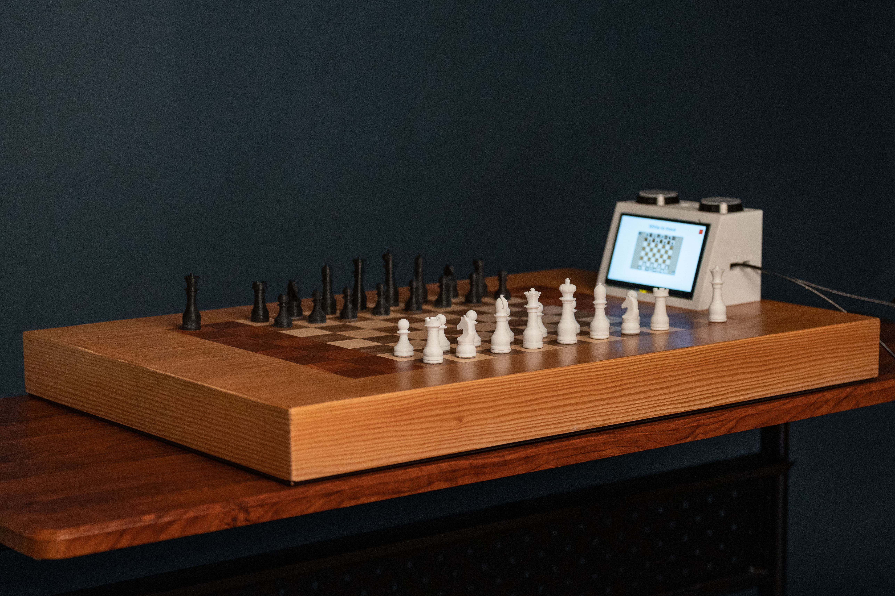

Knightly: Automatic Chessboard
An autonomous chessboard developed by a five-person engineering team,
combining magnetic piece detection, a CoreXY gantry, embedded
electronics, and a Raspberry Pi to detect, plan, and physically
execute chess moves.
Explore Knightly
Knightly was developed as an open-source senior capstone project,
with the goal of creating a physical chessboard capable of
autonomously detecting and moving pieces.
For the full project documentation, including detailed CAD,
electronics, software, and design information, visit the
Knightly project website.
Project Overview
Knightly was my senior capstone project at UC Santa Barbara.
The goal was to create a physical chessboard that could detect
player moves, calculate its own moves, and autonomously move
pieces across the board.
One motivation for the project was accessibility. Voice-controlled
and automated piece movement could allow players with physical
disabilities to interact with a physical chessboard without
requiring another person to move pieces for them. The system also
provides a platform for interactive and remotely connected chess
applications.
The final prototype integrated board-state detection, chess
software, path planning, motion control, and a touchscreen
interface into a single system.
Project Details
Project: ME 189C Senior Capstone
Team: 5-person engineering team
Role: Project Lead
Primary Tools: SolidWorks, C++, Raspberry Pi,
STM32, Arduino, GRBL, Hall-effect sensors, CoreXY motion system
My Role
- Served as project lead for a five-person engineering team.
- Coordinated development and integration across the mechanical, electrical, and software subsystems.
- Designed and assembled the CoreXY gantry and custom mechanical components.
- Created SolidWorks CAD models and drawings for the motion system.
- Integrated the gantry and motion-control system with the rest of the chessboard.
How It Works
- Hall-effect sensors beneath the board detect the magnetic fields from the chess pieces.
- An STM32 processes the sensor signals and communicates the detected board state to the Raspberry Pi.
- The Raspberry Pi manages the chess game, computer-player logic, path planning, touchscreen interface, and communication with the hardware controllers.
- An Arduino Uno running GRBL controls the CoreXY gantry.
 System architecture showing the interaction between the
Raspberry Pi, detection electronics, and gantry controller.
System architecture showing the interaction between the
Raspberry Pi, detection electronics, and gantry controller.
CoreXY Gantry
- The CoreXY gantry was made to translate software commands into physical chess moves.
- Designed custom components in SolidWorks and assembled the motion system around NEMA 17 stepper motors, GT2 belts and pulleys, and linear rods and bearings.
 SolidWorks CAD of the CoreXY gantry.
SolidWorks CAD of the CoreXY gantry.
 Prototype of the assembled CoreXY motion system.
Prototype of the assembled CoreXY motion system.
The final gantry was designed to provide smooth and repeatable
motion while remaining compact enough to fit underneath the
playing surface.
Hall-Effect Piece Detection
- Each chess piece contains a permanent magnet positioned at a specific height.
- Hall-effect sensors beneath each square measure the resulting magnetic field to determine whether a square is occupied and distinguish between black and white pieces.
- Four Hall-effect sensors were placed beneath each tile to reduce errors caused by pieces being slightly off-center.
- Multiplexers were used to collect the large number of sensor signals, with STM32 microcontrollers processing the data.
- The original design aimed to identify all twelve chess piece types using different magnet heights.
- PCB design and manufacturing issues prevented reliable identification of individual piece types, so the final system used a simpler color-detection scheme.
- The system was sensitive to the distance between the magnets and sensors. Slight warping of the final board surface changed this distance and occasionally caused incorrect piece-color detection.
 Magnetic piece detection concept.
Magnetic piece detection concept.
Magnetic Toolhead
- Designed a magnetic toolhead to move pieces beneath the playing surface.
- Compared permanent and electromagnets during prototyping.
- Selected a permanent magnet to provide high force without continuous power consumption.
- Used a servo-driven elevator to engage and disengage the magnet.
 CAD of the magnetic toolhead and magnet elevator.
CAD of the magnetic toolhead and magnet elevator.
Image Gallery
